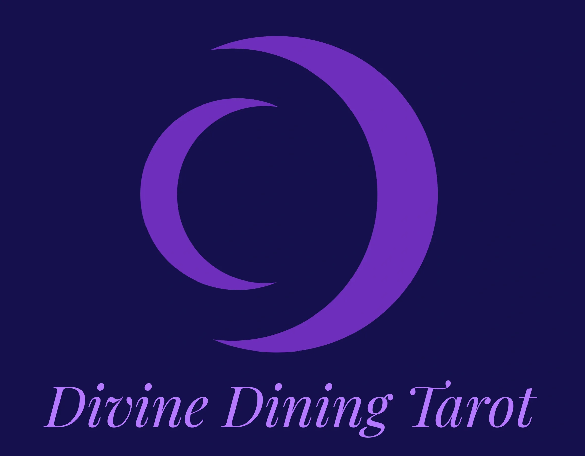
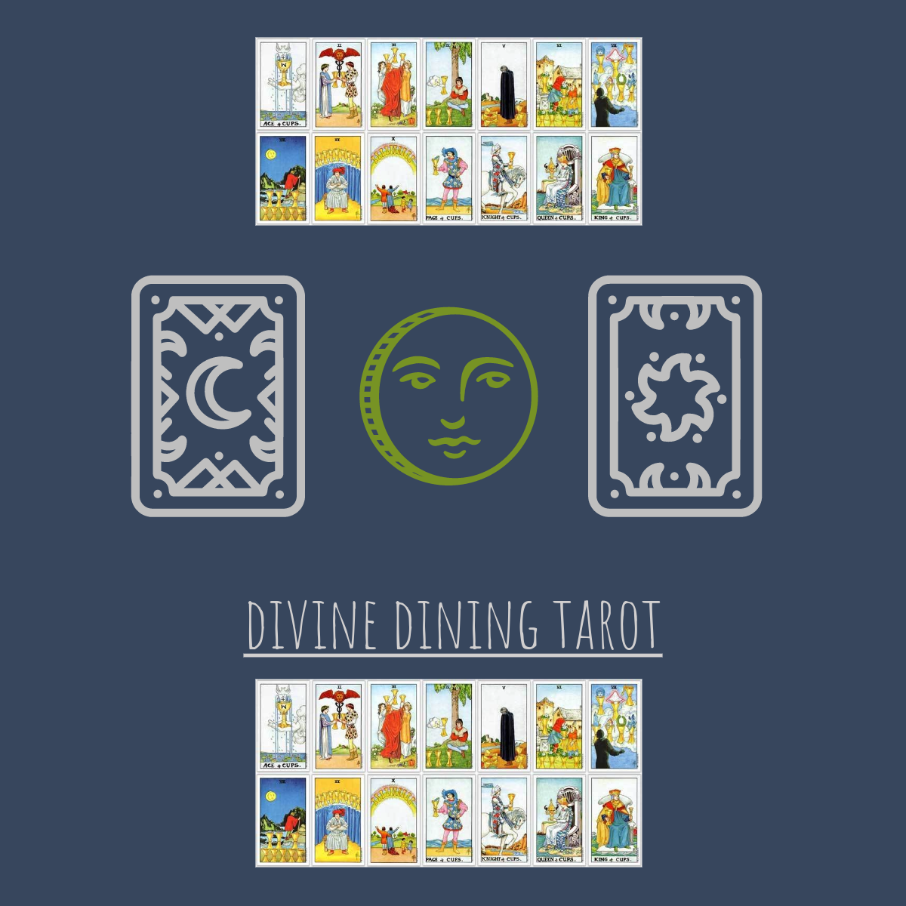
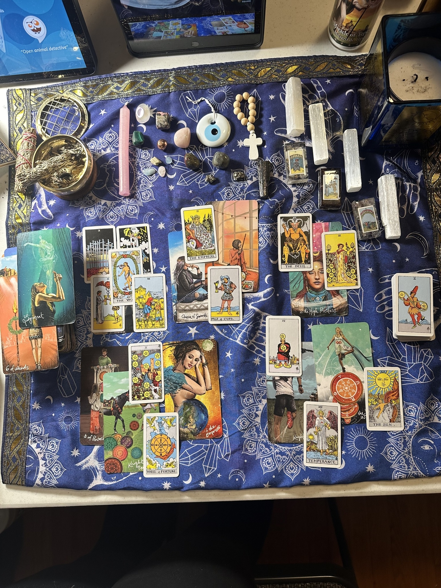
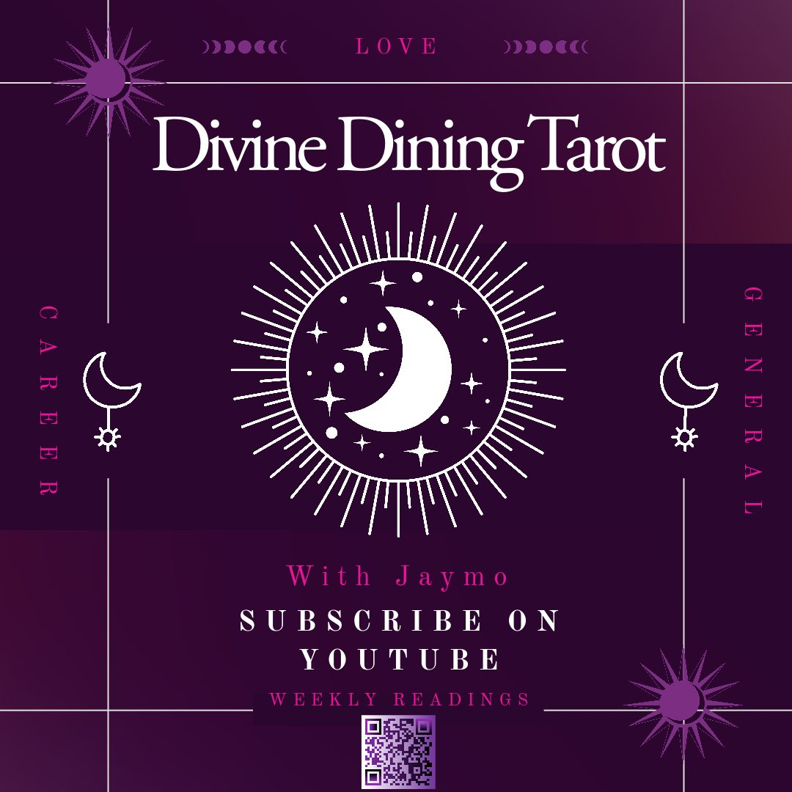
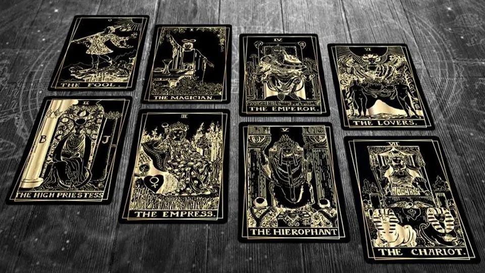
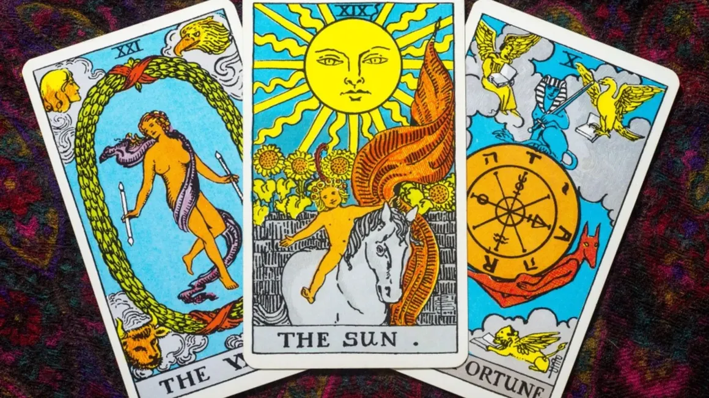
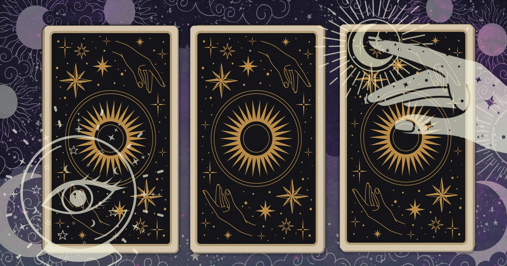
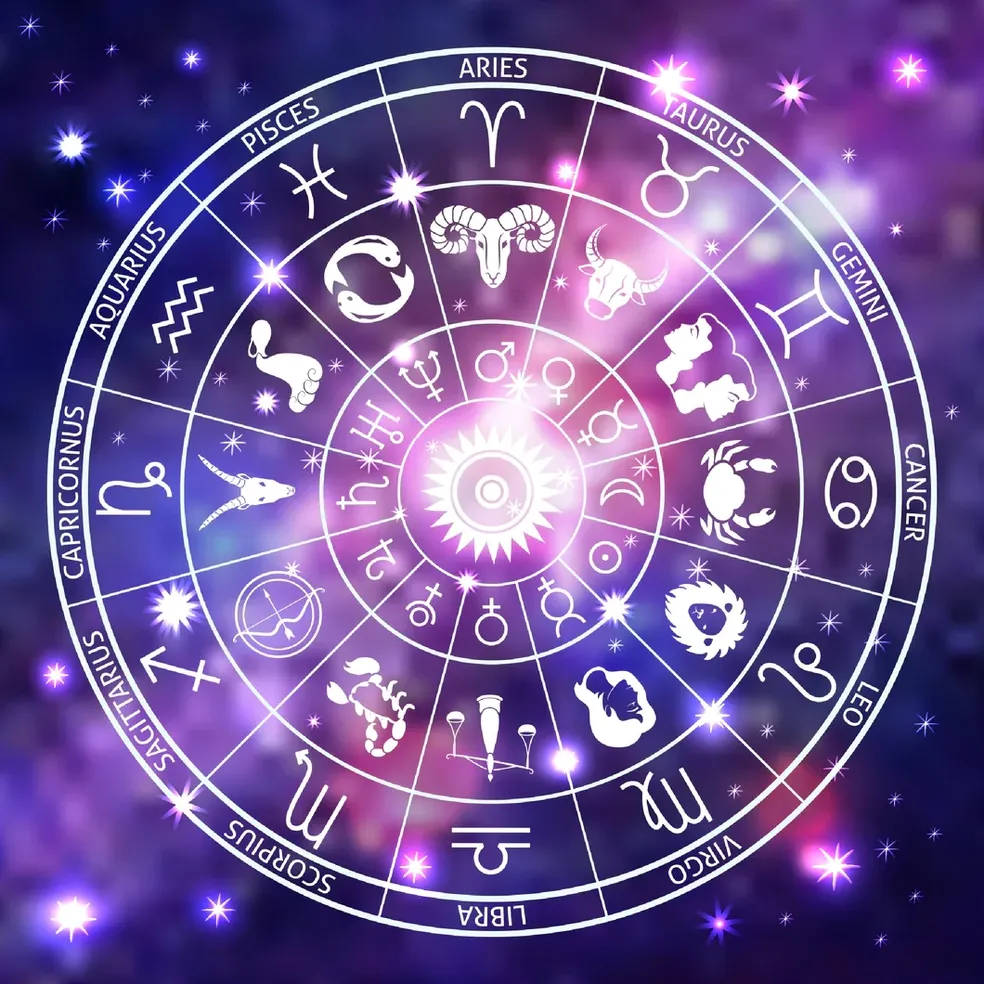

As a lifelong empath and clairvoyant, I’ve always had the ability to sense the emotions, energies, and hidden stories that flow beneath the surface of everyday life. What began as intuitive nudges in childhood grew into a deep spiritual calling, guiding me toward the practice of tarot as a way to help others connect with clarity, healing, and purpose.
At Divine Dining Tarot, I blend my intuitive gifts with the symbolism of the cards to create readings that are both grounded and spiritually nourishing. I believe every session is a shared experience—one where your energy, the cards, and my intuitive insight come together like the ingredients of a meaningful meal. My goal is to help you digest life’s challenges, savor your growth, and leave each reading feeling more aligned, empowered, and understood.
Whether you’re seeking guidance, emotional clarity, or a deeper connection to your own inner wisdom, I’m honored to serve as a compassionate, intuitive guide on your journey.
Contact & Links
Find us at these craft fair dates
Gallery




.webp)



